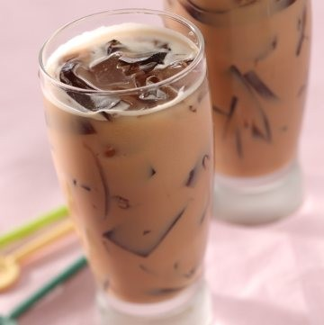

Chese Tea
cheese tea dibuat dengan minuman dasar teh hijau atau teh hitam. Teh tersebut kemudian dicampur dengan susu, cream cheese, dan garam.

Blue Butterfly Flower Tea Latte
Blue Butterfly Flower Tea Latte Yang saya buat sendiri Dengan menggunakan Bunga Telang Dari Kebun sendiri. Rasanya enak aromanya khas. Give a try and happy cooking guy's.

Teh Tarik Jelly
Teh tarik jelly merupakan minuman yang banyak dijual di rumah makan para mamak, dan biasanya diminum bersama hidangan seperti nasi lemak, roti canai, roti telur, atau roti tempayan. Bubuk teh yang dijual kiloan sering digunakan untuk membuat teh tarik.